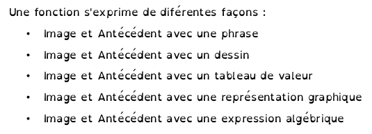
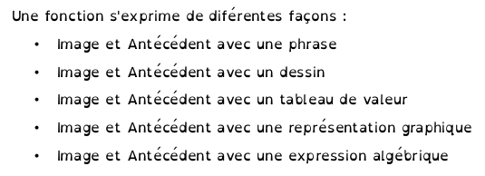

Moodle
Présentation et exemple d’utilisation en maths/sciences
Pascal Padillaaaa - 7 mai 2018
Objectif de la présentation
Objectif et plan
Présentation d’un outil en ligne :
- description générale
- exemples
- perspectives
Moodle - C’est quoi ?
- depuis 2002
- outil en ligne
- plateforme d’apprentissage
- Atrium
Moodle - Ça sert à quoi ?
- pour moi
- diffuser du contenu
- suivre l’activité des élèves
- récupérer des productions
- automatiser certaines tâches comme la notation ou le feedback
- pour les autres…
Moodle - Pourquoi avoir attendu 16 ans pour l’utiliser ?
- accès à internet pour tous
- ENT : Atrium
- parc informatique : PC & tablettes
Utilité
- élèves en activités
- évaluations formatives
- accès aux activités et aux ressources hors temps scolaire
- moins de papier
Utilisable
- contraintes matérielles fortes
- parc informatique entièrement fonctionnel
- matériel spécifique
- accès internet pour tous
- chronophage
Et après ?
- travail collaboratif
- équipe disciplinaire
- équipe pédagogique
- formation à venir :
- prise en main / initiation


 
